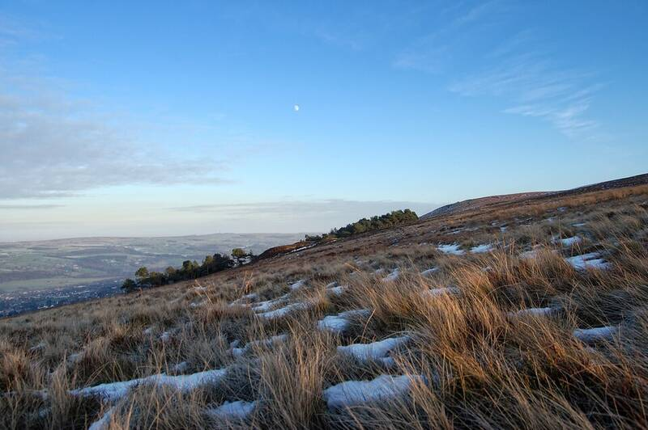

Ilkley Moor photo
Ilkley Moor, West Yorkshire, England, 1987

A retired police officer using the pseudonym Philip Spencer said that on December 1, 1987, he photographed a small, dark green being on the moor, then saw a craft rise into the sky, and later found about two hours missing. Kodak experts found no evidence of tampering, but the photo is "incredibly blurry," and skeptics suggest a person or a cardboard cut-out. Its authenticity remains disputed. 1
Open in the interactive Watcher
Sources
- Ilkley Moor UFO incident Wikipedia